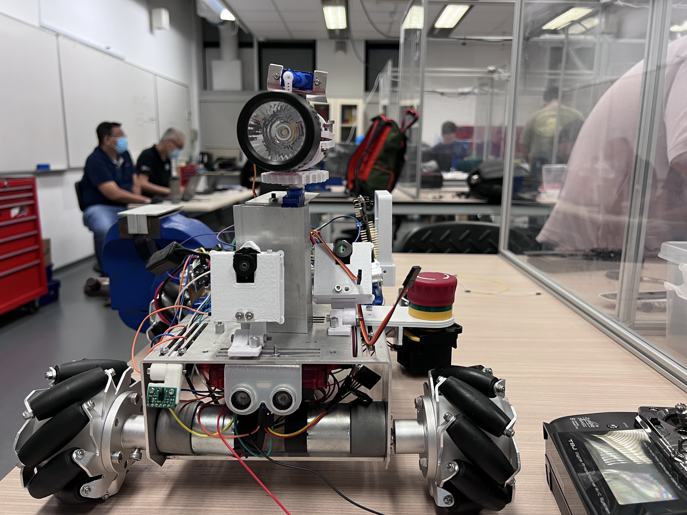

Project 1 & 2
Building a Lite Kit
Project 1 & 2 marked the initial steps into the realm of robotics, focusing on assembling and programming a Lite Kit robot. This hands-on experience provided foundational knowledge in mechanical assembly, hardware programming, and functional testing.
Context
The project commenced with the introduction of the Lite Kit, consisting of various mechanical and electrical components. Our task was to assemble these parts into a functional robot and program it to perform specific tasks using Spin language, a specialized hardware programming language.

This robot was created by fabricating, assembling mechanical and electrical parts. Application of spin language, a specialized hardware programming language, was used to perform machine-level actions.
Torchlight toggle and rotation
Demonstration of the torchlight holder mechanism, highlighting its ability to rotate and toggle the torchlight on and off.
Holder and gear mechanism is designed and created using workshop resources
Directional movement testing
Directional movement testing of robot to ensure directional movement functionality, validating its ability to navigate in specified directions
Color Tracking
Experimentation with color tracking capabilities, showcasing the robot's ability to detect and track specific colors within its environment.